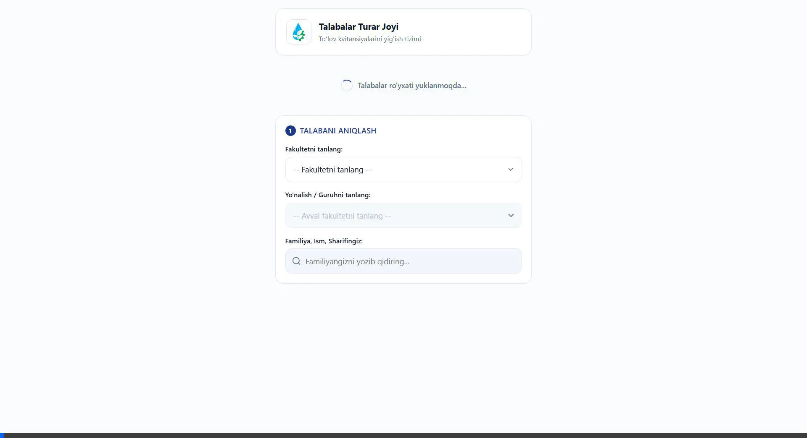

Yotoqxona To'lov Bot — Video Qo'llanma
Mini App orqali talaba qidirish, qarzdorlikni tekshirish va chek yuborish jarayoni namoyishi

Mini App orqali talaba qidirish, qarzdorlikni tekshirish va chek yuborish jarayoni namoyishi
